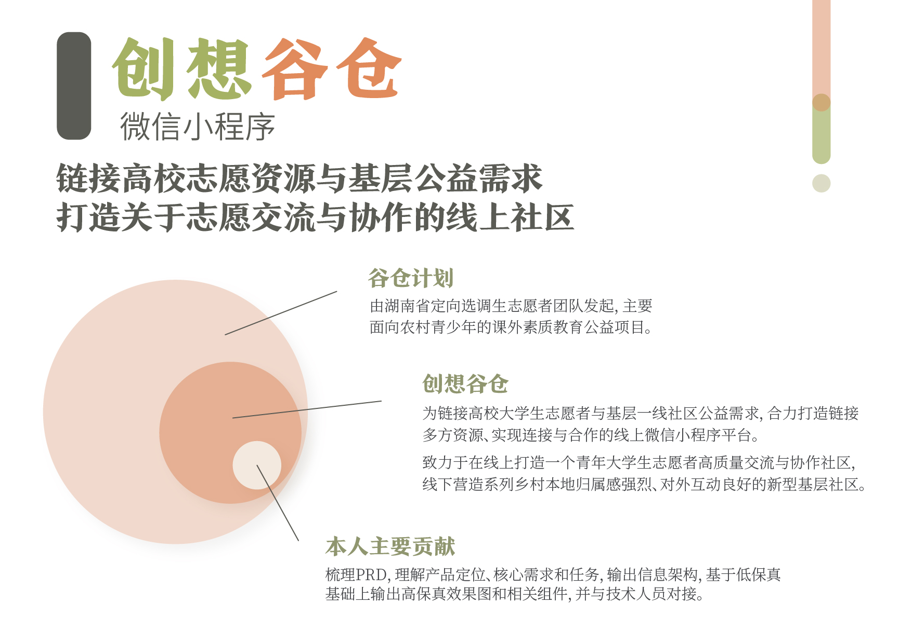
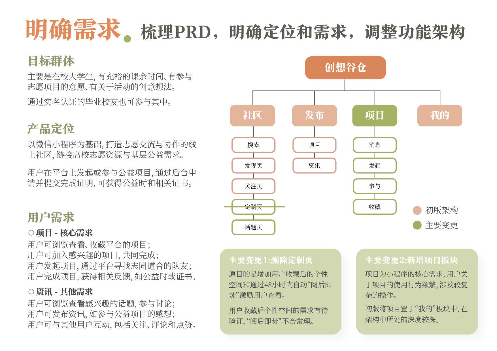
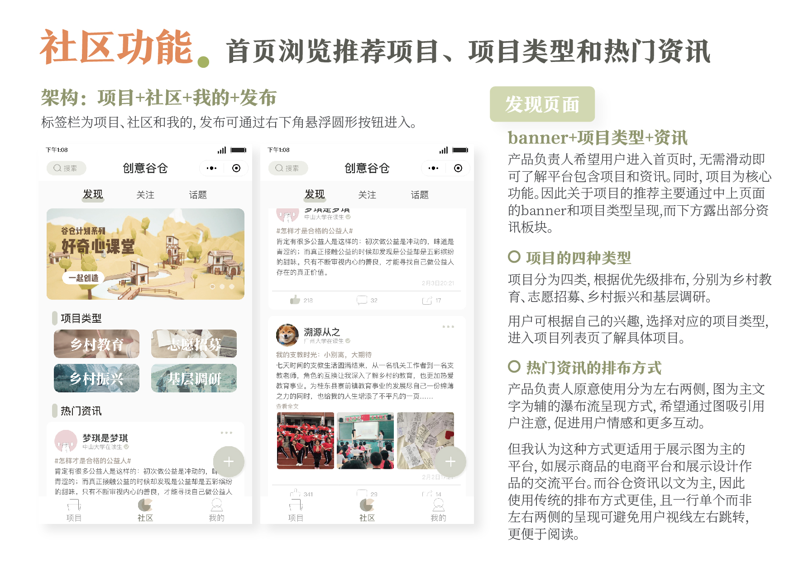
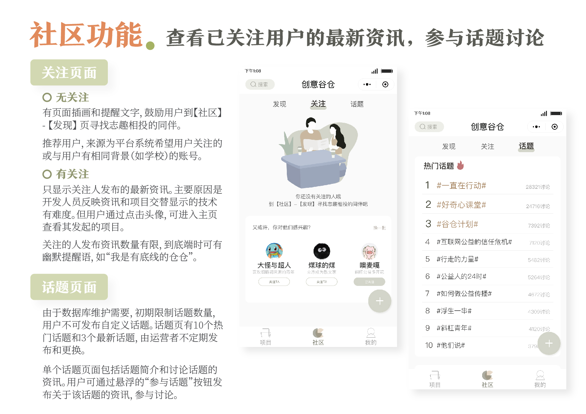
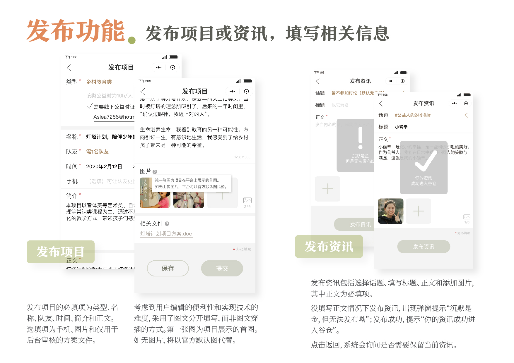
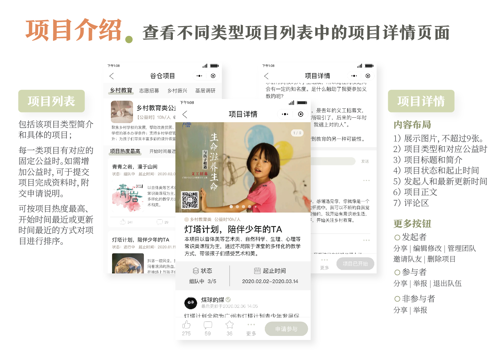

创意谷仓微信小程序
链接高校志愿资源与基层公益需求
项目简介
谷仓计划是由湖南省定向选调生志愿者团队发起，主要面向农村青少年的课外素质教育公益项目。
创想谷仓则是为链接高校大学生志愿者与基层一线社区公益需求，合力打造链接多方资源、实现连接与合作的线上微信小程序平台。其致力于在线上打造一个青年大学生志愿者高质量交流与协作社区，线下营造系列乡村本地归属感强烈、对外互动良好的新型基层社区。
该项目为实际落地项目，目前还在开发中。开发中界面有所调整，与呈现的高保真页面存在些许差异。
项目主要成员包括项目经理阳梦琪、交互设计人员刘颖欣和邱一耕、技术人员周朗和运营人员陈婉虹。





